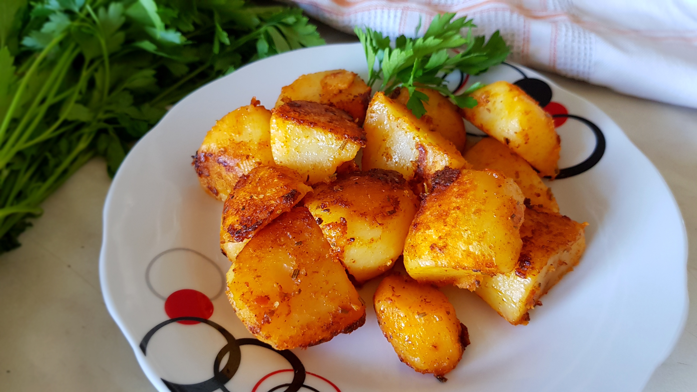

Servings: 6
Return
"Special" Roasted Potatoes
By chefjohn
2

Description
The secret to these deliciously crusty potatoes is the pre-oven boiling in a salted and seasoned liquid. The potatoes not only absorb flavor and salt, but more importantly the surface of the potato cooks, which is what forms the great crunchy texture in the oven.
Ingredients
- 2 pounds new yellow potatoes, halved
- 3 sprigs fresh rosemary
- 3 cloves garlic, whole, peeled, bruised
- 2 bay leaves
- 2 tablespoons salt
- 2 tablespoons olive oil
- 1 pinch cayenne pepper
- 1 pinch kosher salt
Directions
- Place potatoes in a large pot with water. Bruise the rosemary with the dull side of a knife blade and place in the pot. Add garlic, bay leaves, and salt. Bring to a boil; simmer for 5 minutes. Drain; let potatoes air dry.
- Preheat oven to 375 degrees F (190 degrees C).
- When potatoes are thoroughly dry, transfer them back to the pot. Drizzle with olive oil, cayenne pepper, and a pinch of salt. Stir to coat. Transfer potatoes to a rimmed sheet pan. Bake until potatoes are golden brown and crusty, and the flesh is creamy and soft, about 35 to 45 minutes, depending on the size of the potatoes.